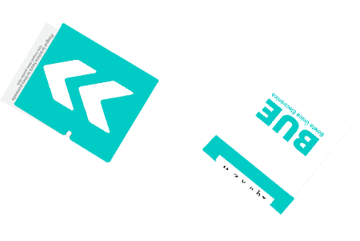

Instructivo para el uso del Sistema de Boleta Única Electrónica (BUE)
Simulador del Sistema de Boleta Única Electrónica (BUE)
La Autoridad de Mesa le entregará una boleta en blanco y retirará ante Usted el primer troquel.

Coloque la boleta en la ranura en el sentido que indica la flecha.
Para iniciar el simulador seleccione el departamento en el que vota:
- Alumine
- Añelo
- Catan Lil
- Chos Malal
- Collon Cura
- Confluencia
- Huiliches
- Lacar
- Loncopue
- Los Lagos
- Minas
- Pehuenches
- Picun Leufu
- Picunches
- Zapala
- Ñorquin
- Alumine
- Kilca
- Lonco Luan
- Pulmari
- Quillen
- Ruca Choroy
- Villa Pehuenia
- Ñorquinco
- Aguada San Roque
- Añelo
- Los Chihuidos
- San Patricio Del Chañar
- Caichihue
- Chacaico Sur
- El Salitral
- La Picaza
- Las Coloradas
- Las Cortaderas
- Media Luna
- Pilo Lil
- Villa Del Puente Picun Leufu
- Cajon Del Curi Leuvu
- Chapua
- Chos Malal
- Chos Malal - Fuera De Radio
- Coyuco-Cochico
- Tricao Malal
- Villa Curi Leuvu
- Carran Cura
- Piedra Del Aguila
- San Ignacio
- Santo Tomas
- Sañico
- Zaina Yegua
- Centenario
- Challaco
- Cutral Co
- Neuquén, Distrito Escolar 1
- Neuquén, Distrito Escolar 8
- Planicie Banderita
- Plaza Huincul
- Plottier
- Sauzal Bonito
- Senillosa
- Villa El Chocon
- Vista Alegre
- Atreuco
- Aucapan
- Chiuquilihuin
- Huechulafquen
- Junin De Los Andes
- Pampa Del Malleo
- Chapelco Grande
- Hua Hum
- Lago Hermoso
- Lago Meliquina
- Pil Pil
- Quila Quina
- San Martin De Los Andes
- Trompul
- Cajon De Almaza
- Chorriaca
- Huarenchenque
- Huncal
- Loncopue
- Quintuco
- La Lipela
- Paso Coihue
- Villa La Angostura
- Villa Traful
- Andacollo
- Guañacos
- Huinganco
- Las Ovejas
- Los Miches
- Manzano Amargo
- Varvarco-Invernada Vieja
- Villa Del Nahueve
- Barrancas
- Buta Ranquil
- Huantraico
- Octavio Pico
- Rincon De Los Sauces
- El Sauce
- Paso Aguerre
- Picun Leufu
- Bajada Del Agrio
- Las Lajas
- Las Lajas - Fuera De Radio
- Los Alazanes
- Mallin De Los Caballos
- Quili Malal
- Barda Negra
- Covunco Abajo
- Laguna Blanca
- Los Catutos
- Mariano Moreno
- Ramon Castro
- Zapala
- Caviahue-Copahue
- Colipilli
- El Cholar
- El Huecu
- Naunauco
- Taquimilan
- Tralaitue
- Tres Chorros

La máquina imprimirá su elección. Compruebe que el texto es correcto acercando la boleta al verificador.

Regrese a la mesa con la boleta plegada por la línea de puntos para preservar el secreto de su selección.

Frente a la Autoridad de Mesa corte el segundo troquel y entréguelo. Por último, introduzca la boleta en la urna para emitir su voto.
Gracias por utilizar el simulador del Sistema de Boleta Única Electrónica (BUE)
Para iniciar el simulador seleccione el municipio en la que vota:
- NE.10
- NE.3
- NE.11
- NE.5
- NE.13
- NE.1
- NE.14
- NE.15
- NE.8
- NE.16
- NE.6
- NE.4
- NE.12
- NE.9
- NE.2
- NE.7